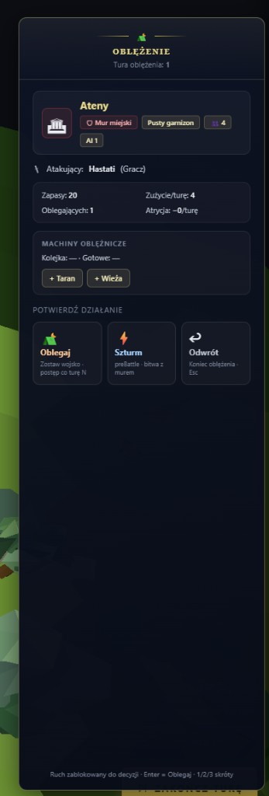

Maciej · 2026-07-05 · screenshot panelu „Oblężenie” (Ateny)
Werdykt: to nie brak mockupu Design — to stary kod lane, który nie dostał portu paczki Design z 2026-07-04.
Mockupy 1E istnieją w repo (C04-C05-A19-mapa-v2). W grze widać emoji + tekst dev preBattle · bitwa z murem.
Następny krok: lane UI port CSS/SVG z .dc.html → 3 pliki TS (bez main.ts).
| ID | Ekran | Plik TS | Design v2 | W grze dziś |
|---|---|---|---|---|
| C-04 | Atak na miasto | cityAttackChoice.ts |
✅ C04 Atak miasto wybor v2 |
⚔ 🏛 🛡 ⛺ ⚡ emoji · lane v2 |
| C-05 / A-17 | Panel oblężenia | siegeMapPanel.ts |
✅ C05 Panel oblezenie v2 |
⛺ 🏛 🛡 ⚔ 👥 🗡 ⚡ ↩ · preBattle w opisie Szturm |
| C-01 / A-16 | Pre-bitwa | preBattle.ts |
✅ v3 (2026-07-03) — częściowo | SVG PB_SVG · ikony jednostek ≠ brand-book (→ JEDNOSTKI-INFOGRAFIKI) |
| A-19 | Miasto zdobyte | cityCaptureNotice.ts |
✅ A19 Miasto zdobyte v2 |
🏛 emoji · lane v1 |

| Element | Problem | W mockupie Design v2 |
|---|---|---|
| Nagłówek ⛺ | Emoji namiot | Ornament SVG oblężenia |
| Medalion miasta 🏛 | Emoji | SVG miasto / Partenon line |
| Tagi 🛡 ⚔ 👥 | Emoji w chipach | Tekst + ikony SVG |
| Atakujący 🗡 | Emoji | Infografika jednostki (kategoria B) |
| Szturm ⚡ + opis | preBattle · bitwa z murem — tekst dev | „Bitwa z murem” · niebieski #3a6ad0 |
| Oblegaj ⛺ | Emoji + pomarańcz hover lane | Brąz #c87840 · SVG |
| Przycisk Oblegaj | Label „Oblegaj” | Design: „Kontynuuj” (Enter) — do potwierdzenia Macieja |
docs/ux/claude-design/The Game - C04 Atak miasto wybor v2 (1E).dc.htmldocs/ux/claude-design/The Game - C05 Panel oblezenie v2 (1E).dc.htmldocs/ux/claude-design/The Game - A19 Miasto zdobyte v2 (1E).dc.htmldocs/ux/claude-design/DESIGN-do-UI_C04-C05-A19-v2.mdC04-C05-A19-mapa-v2_2026-07-04Osobny ekran (Total War). Lane ma v3 Design — layout OK, ale:
PB_SVG (4 klasy) — niespójne z miastem / polem bitwyJEDNOSTKI-INFOGRAFIKI-1E + ewentualny refresh C-01 po ikonachThe Game · audyt C-04/C-05/preBattle · 2026-07-05